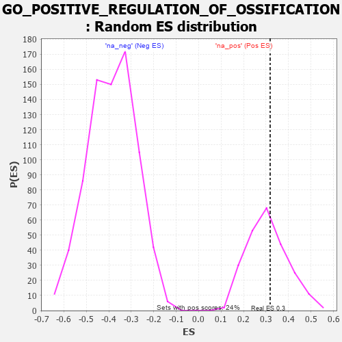

| | | Dataset | 7d |
| Phenotype | NoPhenotypeAvailable |
| Upregulated in class | na_pos |
| GeneSet | GO_POSITIVE_REGULATION_OF_OSSIFICATION |
| Enrichment Score (ES) | 0.3181696 |
| Normalized Enrichment Score (NES) | 1.0339794 |
| Nominal p-value | 0.4 |
| FDR q-value | 0.70388615 |
| FWER p-Value | 1.0 |
Table: GSEA Results Summary
 Fig 1: Enrichment plot: GO_POSITIVE_REGULATION_OF_OSSIFICATION
Fig 1: Enrichment plot: GO_POSITIVE_REGULATION_OF_OSSIFICATION
Profile of the Running ES Score & Positions of GeneSet Members on the Rank Ordered List
| PROBE | GENE SYMBOL | GENE_TITLE | RANK IN GENE LIST | RANK METRIC SCORE | RUNNING ES | CORE ENRICHMENT | | 1 | TGFB3 | | | 49 | 2.654 | 0.2017 | Yes |
| 2 | SMAD5 | | | 231 | 0.979 | 0.2555 | Yes |
| 3 | HGF | | | 276 | 0.870 | 0.3182 | Yes |
| 4 | MEF2C | | | 1054 | 0.473 | 0.2575 | No |
| 5 | LRP5 | | | 1769 | 0.342 | 0.1945 | No |
| 6 | BMP7 | | | 2107 | 0.290 | 0.1748 | No |
| 7 | ANO6 | | | 2339 | 0.255 | 0.1657 | No |
| 8 | ACVR1 | | | 2932 | 0.161 | 0.1038 | No |
| 9 | WNT4 | | | 3023 | 0.146 | 0.1039 | No |
| 10 | SMAD3 | | | 3303 | 0.105 | 0.0770 | No |
| 11 | SMAD1 | | | 3337 | 0.099 | 0.0806 | No |
| 12 | NELL1 | | | 3538 | 0.070 | 0.0609 | No |
| 13 | SUCO | | | 3816 | 0.025 | 0.0280 | No |
| 14 | NIPBL | | | 3900 | 0.010 | 0.0184 | No |
| 15 | SFRP2 | | | 4065 | -0.018 | -0.0008 | No |
| 16 | ADRB2 | | | 4352 | -0.068 | -0.0315 | No |
| 17 | ILK | | | 4510 | -0.096 | -0.0437 | No |
| 18 | TOB2 | | | 5337 | -0.282 | -0.1255 | No |
| 19 | JAG1 | | | 6060 | -0.494 | -0.1777 | No |
| 20 | ISG15 | | | 6385 | -0.608 | -0.1708 | No |
| 21 | DDR2 | | | 6542 | -0.681 | -0.1372 | No |
| 22 | MSX2 | | | 7299 | -1.171 | -0.1406 | No |
| 23 | FBN2 | | | 7906 | -2.873 | 0.0082 | No |
Table: GSEA details [plain text format]

Fig 2: GO_POSITIVE_REGULATION_OF_OSSIFICATION: Random ES distribution
Gene set null distribution of ES for GO_POSITIVE_REGULATION_OF_OSSIFICATION